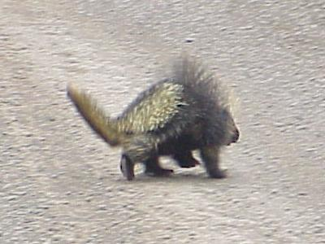
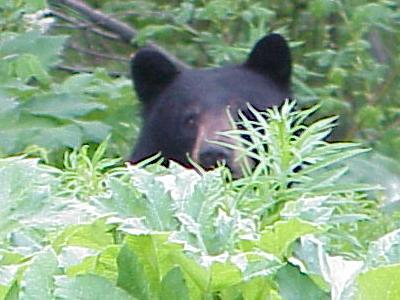
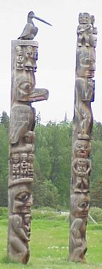
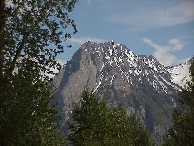
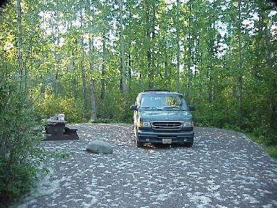

June 13, 7610 miles
| We started the day leaving camp at 8:45. It was nice to get to sleep when it was dark out for a change, so I think we both slept extremely well. | |
| Today was to be largely travel, although we did do a little sight seeing. Along our way we had to slow down a little to let this guy get across the road. Mr. Porcupine sure took his time, but when he got off the road surface he was gone in a flash. |  |
| We also got to see a few Black Bear, which was nice after getting skunked on the large mammals yesterday. This bear had two cubs along with her when we first saw her crossing the road ahead of us, but the weeds are high along the road already and they quickly ducked out of sight, but mom bear gave one last glance back at us before she disappeared also. |  |
 |
Well a quick shot at playing tourist. We stoped by
the town of Kitseguecla and Kitwancool to look at the
totem poles there. By the way the name "Kitwancool" means "place of reduced number," and was used as the town's name after many of the inhabitants were killed in raids by other tribes. |
| Ok, the daily mountain shot. We had another good day for traveling, with just a few raindrops every now and then. Most of the day was cloudy, but here is a shot of clear sky. |  |
| We camped at another British Columbia provincial park
- Tyhee Lake Provincial Park - as usual the sites are
large and fire wood is provided at no cost. These parks
have also proven to be extremly quiet at night. By the way, that white stuff you see is not snow (I wish, it is 71 degrees out and the mosquitos love it), it is the seeds from all the quaking aspen trees around here; unluckily it gets everywhere. |
 |
| We pulled into the campgrounds, just
outside Telkwa, at 7:30 after traveling 332 miles. There
were relatively few other campers in the campgrounds,
maybe about 20% occupied. Wildlife for the day included: porcupine (1); black bear (5, including one mom with two cubs); fox (1). |
|